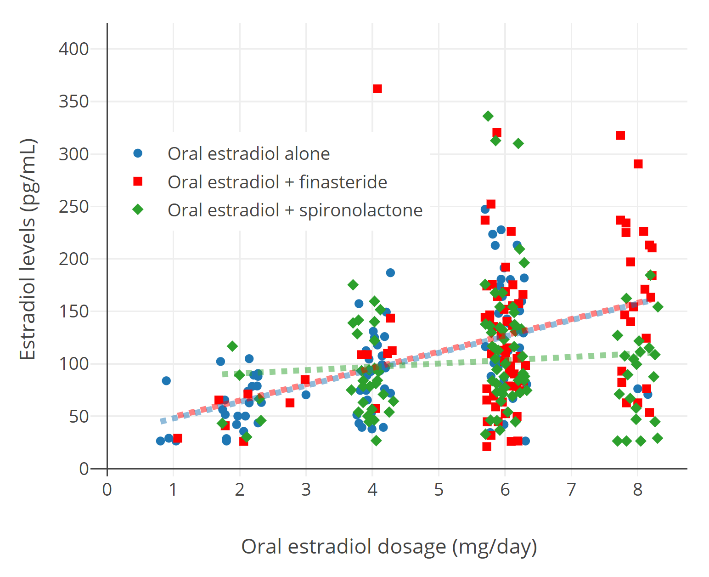
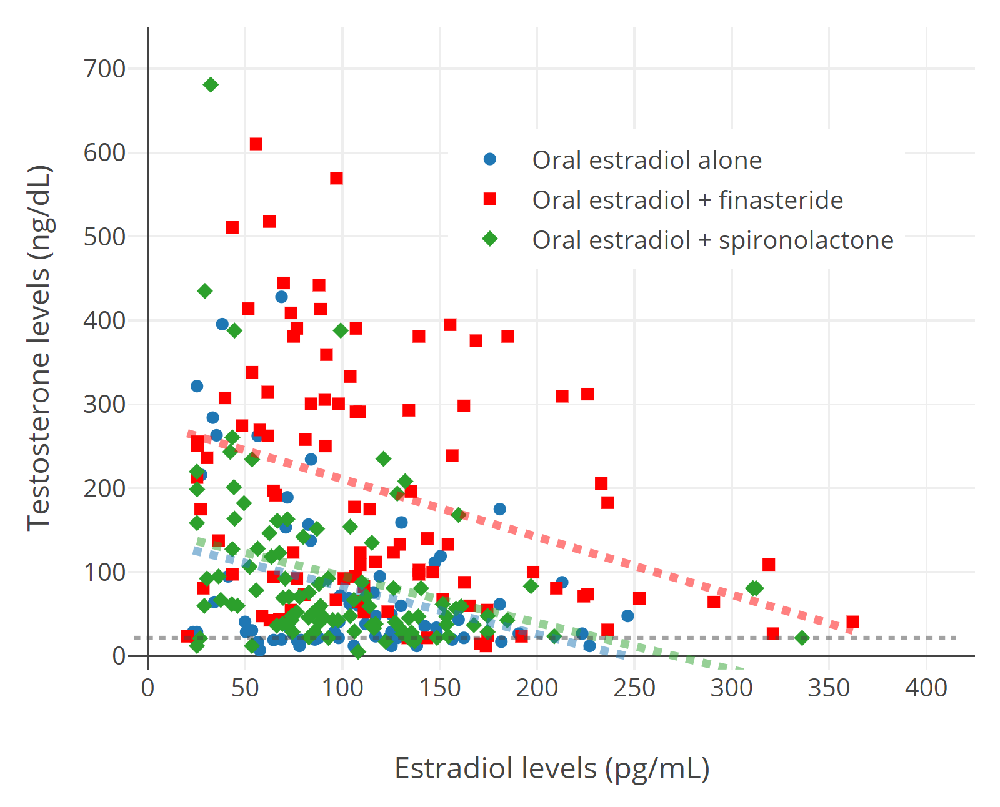
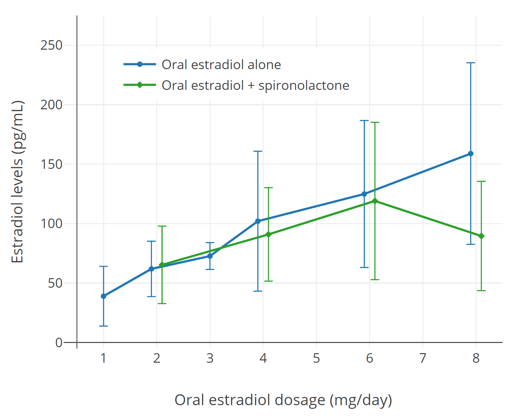
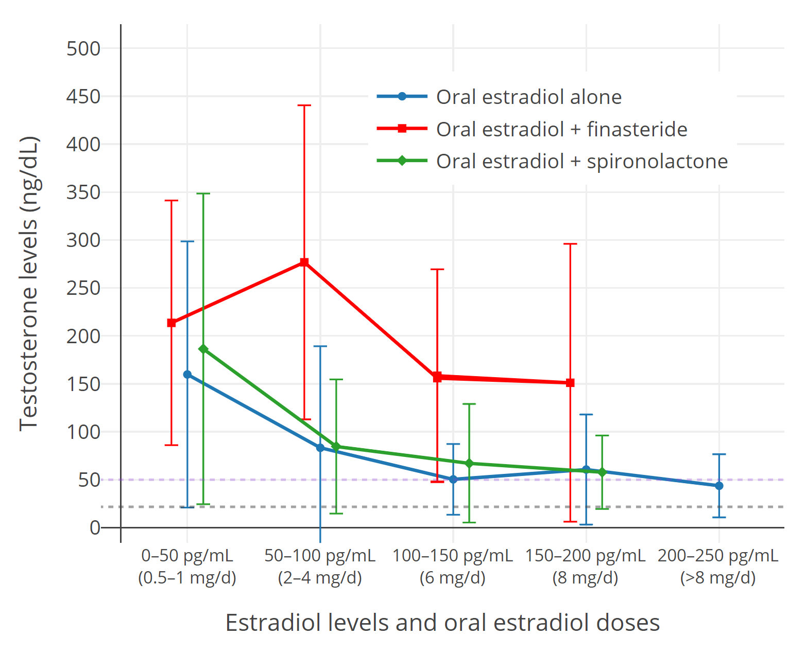

Analysis of Estradiol and Testosterone Levels with Oral Estradiol in Transfeminine People Based on Leinung et al. (2018)
By Aly | First published March 27, 2019 | Last modified February 17, 2023
Abstract / TL;DR
Analysis has been performed and information is provided on estradiol and testosterone levels with different doses of oral estradiol alone or in combination with antiandrogens including spironolactone (200 mg/day) and finasteride (5 mg/day) in transfeminine people based on published data from Leinung et al. (2018). With oral estradiol alone, mean estradiol levels ranged from 39 to 159 pg/mL across a dose range of 1 to 8 mg/day and mean testosterone levels ranged from 160 ng/dL at estradiol levels of <50 pg/mL to 44–61 ng/dL at estradiol levels of >100 pg/mL. Finasteride was associated with higher testosterone levels at all estradiol dose levels while spironolactone was associated with lower estradiol levels but only at an oral estradiol dose of 8 mg/day and not at other doses (2–6 mg/day). Mean testosterone levels in post-gonadectomy transfeminine people were 22 ng/dL. These findings suggest that oral estradiol dose-dependently suppresses testosterone levels and that estradiol and testosterone levels with oral estradiol may be modified by antiandrogens in transfeminine people.
Introduction
A retrospective chart study which quantified estradiol levels and suppression of testosterone levels with oral estradiol alone and in combination with an antiandrogen in a large sample of transfeminine people in the United States was published in May 2018 by Leinung and colleagues. The sample size for the study was 166 transfeminine people and estradiol and testosterone levels were determined with chemiluminescent immunoassay (CLIA). Here is the citation for the study:
- Leinung, M. C., Feustel, P. J., & Joseph, J. (2018). Hormonal Treatment of Transgender Women with Oral Estradiol. Transgender Health, 3(1), 74–81. [DOI:10.1089/trgh.2017.0035]
This is a very useful study because it has data in transfeminine people that can provide precise estimates for answers to several open questions about transfeminine hormone therapy. These include what estradiol levels will be achieved with different doses of oral estradiol, how much testosterone levels will be suppressed with different doses/levels of estradiol, and the influence of certain antiandrogens—specifically spironolactone and finasteride—on estradiol and testosterone levels with oral estradiol.
I’ve digitized and recreated the two main graphs of interest from the paper. These new graphs are of higher image quality than the originals and I feel have an improved appearance. They aren’t perfect replicas of the originals (overlapping data points in the original graphs prevented this from being possible), but they should be quite close (e.g., ± 4 data points). In addition to the remade graphs, I’ve created two new graphs using data from the figures in the paper. These new graphs are variations of the originals that I think may be more understandable and useful. The four graphs are shown below (Figures 1–4). A supplementary spreadsheet containing the extracted data used to create these graphs can be found here. Some of the raw data in the spreadsheet is also included below in the Data Tables section.
As this study was not a randomized controlled trial (RCT) and was instead a retrospective chart review, there are limitations with these data that must be noted. For example, estradiol levels with different doses of oral estradiol may be inaccurate to a degree because transfeminine people in the study had their doses adjusted based on hormone levels (e.g., low/unsatisfactory estradiol levels or testosterone suppression resulting in increased doses and high/excessive estradiol levels resulting in dose decreases). In any case, estradiol levels with oral estradiol in this study were fairly similar to those that have been reported in other studies (e.g., Lobo & Cassidenti, 1992; Kuhl, 2005; Wiki; Graphs). It should also be noted that hormone levels vary by study and blood-testing methodology used.
Graphs
Recreated Graphs
 |
|---|
| Figure 1: Estradiol levels (pg/mL) with different doses (mg/day) of oral estradiol (E2) in transfeminine people. Estradiol levels are represented by blue circles (●) with oral estradiol alone, by red squares (■) with oral estradiol plus finasteride, and by green diamonds (◆) with oral estradiol plus spironolactone. The lines of colors corresponding to those of the points represent linear trendlines for the data points. This figure has also been uploaded to and can be found on Wikipedia (Wiki). |

 |
|---|
| Figure 2: Testosterone levels (ng/dL) at different levels of estradiol (pg/mL) with oral estradiol (E2) in transfeminine people. Testosterone levels are represented by blue circles (●) with oral estradiol alone, by red squares (■) with oral estradiol plus finasteride, and by green diamonds (◆) with oral estradiol plus spironolactone. The dashed horizontal grey line is the mean testosterone level in a comparison group of post-gonadectomy transfeminine people (21.7 ± 12.4 ng/dL, with 13 determinations below 10 ng/dL, the lower limit of detection for the assay). This figure has also been uploaded to and can be found on Wikipedia (Wiki). |

New Graphs
 |
|---|
| Figure 3: Estradiol levels (pg/mL) with 1 to 8 mg/day oral estradiol (E2) alone (blue line) or in combination with 200 mg/day oral spironolactone (green line) in transfeminine people. The oral estradiol alone group is actually a combination of oral estradiol alone and oral estradiol taken together with finasteride (5 mg/day); these two groups showed no significant differences in estradiol levels in the original data so they were combined for this graph. Estradiol levels with estradiol alone versus estradiol plus spironolactone seemed to be different only at the highest oral estradiol dose level (8 mg/day). The error bars represent standard deviations from the mean. This figure has also been uploaded to and can be found on Wikipedia (Wiki). |

 |
|---|
| Figure 4: Testosterone levels (ng/dL) at different ranges of estradiol levels (pg/mL) with oral estradiol (E2) alone (blue line) or in combination with 5 mg/day finasteride (red line) or 200 mg/day oral spironolactone (green line) in transfeminine people. The typical oral estradiol doses (mg/day) for each range of estradiol levels are also provided. The dashed horizontal purple line is the upper limit for the normal female or castrate range (~50 ng/dL), while the dashed horizontal grey line is the mean testosterone level in a comparison group of post-gonadectomy transfeminine people (21.7 ± 12.4 ng/dL, with 13 determinations below 10 ng/dL, the lower limit of detection for the assay). The error bars represent standard deviations from the mean. This figure has also been uploaded to and can be found on Wikipedia (Wiki). |

Data Tables
Estradiol Levels with Oral Estradiol
Table 1: Estradiol levels with different doses of oral estradiol alonea in transfeminine people:
| Dosage | n | Estradiol level (mean ± SD) |
|---|---|---|
| 1 mg/day | 5 | 39 ± 25 pg/mL |
| 2 mg/day | 24 | 62 ± 23 pg/mL |
| 4 mg/day | 34 | 102 ± 59 pg/mL |
| 6 mg/day | 80 | 125 ± 62 pg/mL |
| 8 mg/day | 24 | 159 ± 76 pg/mL |
a Actually pooled data for oral estradiol alone and oral estradiol combined with finasteride (5 mg/day); these two groups showed no significant differences in estradiol levels in the original data so they were pooled together for this table.
Testosterone Levels with Oral Estradiol
Table 2: Testosterone levels at different estradiol levels with oral estradiol alonea in transfeminine people:
| Estradiol level range | n | Estradiol level (mean ± SD) | Testosterone level (mean ± SD) |
|---|---|---|---|
| <50 pg/mL | 11 | 33 ± 8.4 pg/mL | 160 ± 139 ng/dL |
| 50–100 pg/mL | 24 | 76 ± 15 pg/mL | 83 ± 106 ng/dL |
| 100–150 pg/mL | 21 | 125 ± 14 pg/mL | 50 ± 37 ng/dL |
| 150–200 pg/mL | 8 | 170 ± 15 pg/mL | 61 ± 57 ng/dL |
| 200–250 pg/mL | 4 | 227 ± 14 pg/mL | 44 ± 33 ng/dL |
a Only oral estradiol alone; oral estradiol combined with finasteride or spironolactone not included.
Update: Jain, Kwan, & Forcier (2019)
Shortly following the publication of Leinung et al. (2018), Jain and colleagues published a similar study of sublingual estradiol in combination with spironolactone and with or without medroxyprogesterone acetate in transfeminine people (Jain, Kwan, & Forcier, 2019).
Supplementary Material
References
- Jain, J., Kwan, D., & Forcier, M. (2019). Medroxyprogesterone acetate in Gender-Affirming therapy for Transwomen: results from a retrospective study. The Journal of Clinical Endocrinology & Metabolism, 104(11), 5148–5156. [DOI:10.1210/jc.2018-02253]
- Kuhl, H. (2005). Pharmacology of estrogens and progestogens: influence of different routes of administration. Climacteric, 8(Suppl 1), 3–63. [DOI:10.1080/13697130500148875] [PDF]
- Leinung, M. C., Feustel, P. J., & Joseph, J. (2018). Hormonal Treatment of Transgender Women with Oral Estradiol. Transgender Health, 3(1), 74–81. [DOI:10.1089/trgh.2017.0035]
- Lobo, R. A., & Cassidenti, D. L. (1992). Pharmacokinetics of Oral 17 β-Estradiol. The Journal of Reproductive Medicine, 37(1), 77–84. [Google Scholar] [PubMed] [PDF]